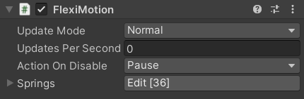
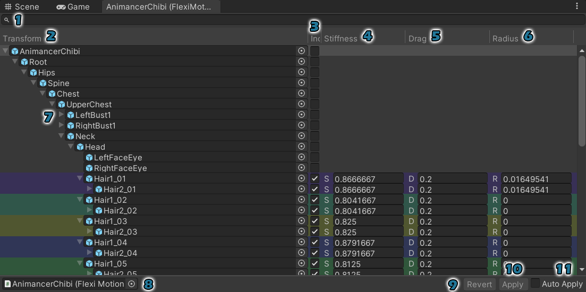
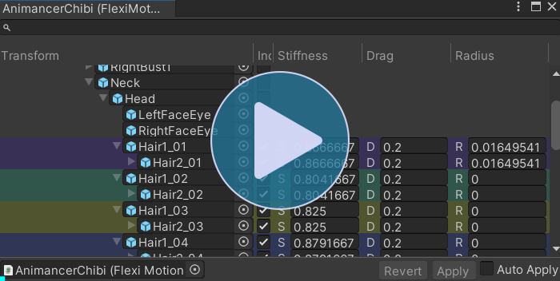
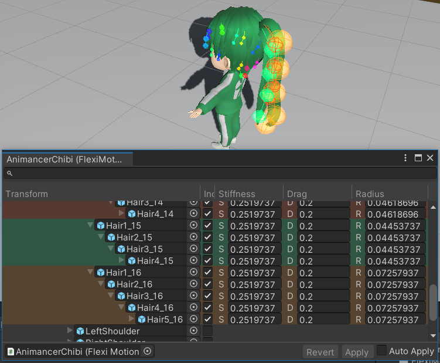
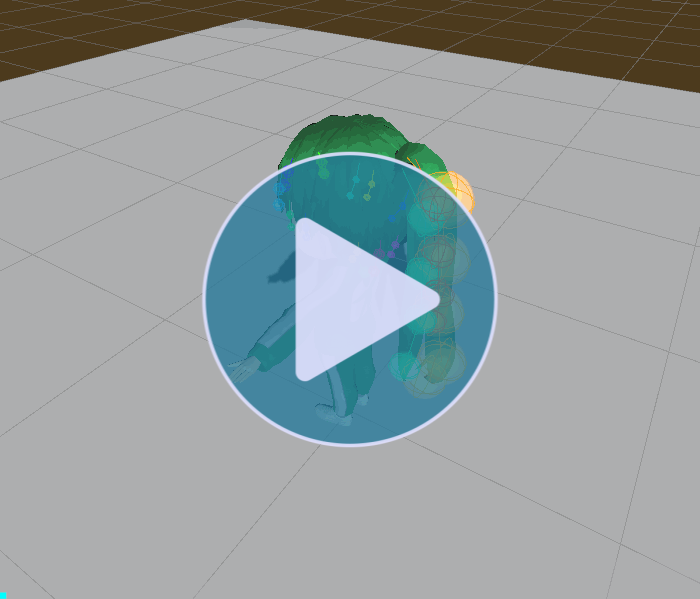

The main entry point into this system is the FlexiMotion component where the simulation parameters are defined.

| Field | Description |
|---|---|
Update Mode |
Determines when the simulation is updated:
These updates are executed by scripts which inherit from |
Updates Per Second |
Determines how many times per second the simulation will be updated. The default value is 0, which will give one update each time the UpdateMode triggers an update. Otherwise, it will keep its own timer to ignore updates or update multiple times in a row as necessary (up to the FlexiMotionRuntime.MaximumUpdatesPerFrame).
|
Action On Disable |
Determines what happens when the FlexiMotion component is disabled or its GameObject becomes inactive (i.e. in OnDisable):
The default |
Springs |
This is where the main details of the simulation are defined: which objects to simulate and their drag, stiffness, and collision radius. The Edit button opens the FlexiMotion Window where you can configure all the details much more effectively than in the Inspector. |
FlexiMotion Window
The FlexiMotion Window shows the character's hierarchy and the spring data associated with each object.

| # | Name | Description |
|---|---|---|
| 1 | Search | Filter the hierarchy by object name. |
| 2 | Transform | The character's Transform hierarchy. |
| 3 | Included | This column determines which objects are actually included in the simulation. When enabled for an object, its other fields will be shown (Stiffness, Drag, and Radius). |
| 4 | Stiffness | Determines how strongly the object tries to return to its starting rotation. |
| 5 | Drag | Determines how much the object's velocity is reduced every frame. Values range from 0 to 1. |
| 6 | Radius | The size of the object's Collision sphere. |
| 7 | Foldouts | The foldout arrows work like the regular Hierarchy window. If you hold Alt while clicking one, it will recursively expand/collapse its children as well. |
| 8 | Target | The FlexiMotion component being edited by the window. |
| 9 | Revert | Undo any changes made in the window. |
| 10 | Apply | Save any changes made in the window to the Target component. |
| 11 | Auto Apply | Immediately Apply any changes as soon as they are made. This is particularly useful in Play Mode if you want to see the effects of each change as you make them. This option will automatically be disabled when leaving Play Mode so you can choose whether to Apply or Revert the changes when back in Edit Mode. |
Multi-Selection
The window allows you to select and edit multiple rows at the same time:
- Selecting a row then Shift + Clicking another row will select all rows between them.
- Ctrl + Clicking a row will toggle it between selected and deselected.

Scene GUI
The window shows gizmos in the scene for each simulated object. Their colors are determined by their highest included parent so that a chain of objects will each share the same color.

If you mouse over one of the gizmos, you can press F to frame it. Or you can press Esc to zoom back out to view the whole character.
